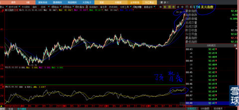
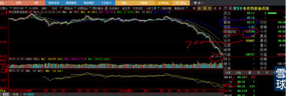
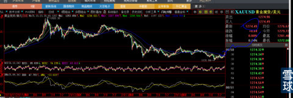

人任性，谁也把他没有办法，我就是任性的典型。
在大盘如此暴跌，创下2007年”530“后之最的单日暴跌后，我写出“未来的股指会更强”？可见任性之一斑，反正我凭机智、勇敢的本能回避了这次大盘的暴跌，有了一点点任性的资格。
敢于对迷惘的未来做出方向性决断，是不以人意志为转移的、摆在每一个投资人面前必须面对的残酷真实。不管你是老手还是菜鸟，在残酷的真实面前这一点倒是人人平等，处在同一起跑线上。谁让我生来就最痛恨：涨时看涨、跌时看跌、人云亦云、事后诸葛呢？
今天我就是要站在全体市场、媒体、人性恐惧的对立面：大声说出：大宗商品即将“否极泰来、未来股指会更强”，不是说给别人听的，是我操盘原来就有的时间段计划中的一部分。通过读我前段时间的帖子就可以知晓全部思路。是的，我不是经济学家，没有“华尔街”华丽的新装，连对'高盛"望其项背的资格都没有，但是，我有长达30年的实业生涯和工作、生活阅历的积累，有对人性深刻理解的思考沉淀，坚信“模糊的正确比精确的错误”要重要100倍。
上周，我写出了《坚守黄金》，那么石油呢？我相信石油期货底部已经在前几天被打了出来，看看下图的美元指数期货涨幅是多么的强悍？但是，只有我自己能够看懂的DMA指标，已经发出强烈美元指数顶背离信号，基于我个人对美国、欧洲、中国、俄罗斯政权、政治、民主、民生本质的理解与沉淀，不太会相信美元指数会在2015年冲击100整数大关，纵使它的涨势如虹，迷失了所有人的双眼，我也只会相信自己的常识与经验。见美元指数走势下图。

布伦特石油，主要指针对东亚有效的价格（纽约石油价格是北美价格），上周二的1月13日创下45.19美元/桶的价格新低，但是，我毫不怀疑它会在不远的将来，也许下半年、也许2015年3季度、也许年底前，谁知道呢？反正会站上70美元大关，并在下一年的2016年继续上行，想想石油期货的未来，再想想“中国石油”今天的股价，就可以毫不费力的猜到中国A股的未来是不是会更强？这不需要太高的智商。

黄金等贵金属就更不用说了，它已经用价格和走势在诉说自己的倔强。黄金现货在2014年11月5日创下1131.84美元/盎司后，就拒绝随同美元的上涨而下跌，在今天我看盘时刻走在1276.59美元/盎司，要知道，2014年11月5日美元指数是87.42，今天的2个小时前美元指数最高价是93.26，整整涨幅6.68%，而黄金现货不仅没有下跌，反而涨幅12.78%，就如同我前期《守住黄金》帖子里说道：全市场的眼睛都瞎了吗？

只简单列举上述三个品种，就包含了：石油、煤炭、新能源、光伏、金银贵金属、随之而来的有色金属、石化化工、化学等等范畴，这些品种一定会是新的市场热点。
所以，我就任性的大声说：未来的指数没有最强，只会更强！
 |
未来的股指会更强！炒的是心 2015-01-20 01:47:05 |
Copyright © 1996-2014 SINA Corporation All Rights Reserved.